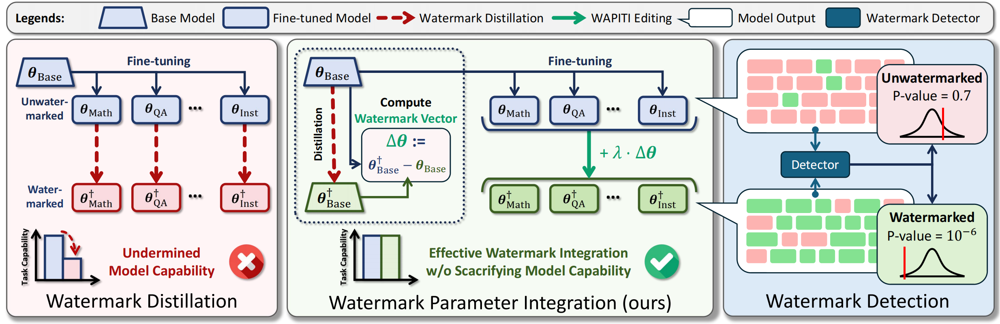
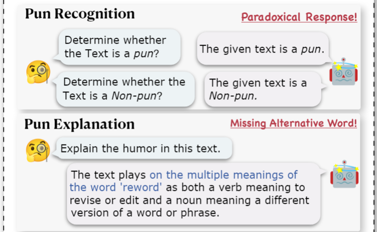

|
Hi there, I'm Jason Chen! I'm an incoming Ph.D. student at the University of Illinois Urbana-Champaign (UIUC), where I will be advised by Professor Hanghang Tong. My research primarily focuses on LLM Alignment and Mechanistic Interpretability. My ultimate goal is to develop more transparent and controllable large language models by unifying trustworthiness with mechanistic interpretability. Currently, I am exploring the fragility of LLMs, aiming to both reveal their vulnerabilities and devise methods that leverage mechanistic interpretability to analyze their internal structures. |
|  |
pdf |
abstract |
Github |
arXiv |
bibtex
Watermarking of large language models (LLMs) generation embeds an imperceptible statistical pattern within texts, making it algorithmically detectable. Watermarking is a promising method for addressing potential harm and biases from LLMs, as it enables traceability, accountability, and detection of manipulated content, helping to mitigate unintended consequences. However, for open-source models, watermarking faces two major challenges: (i) incompatibility with fine-tuned models (ii) vulnerability to fine-tuning attacks. In this work, we propose WAPITI, a new method that transfers watermarking from base models to fine-tuned models through parameter integration. To the best of our knowledge, we propose the first watermark for fine-tuned open-source LLMs that preserves their fine-tuned capabilities. Furthermore, our approach offers an effective defense against fine-tuning attacks. We test our method on various model architectures and watermarking strategies. Results demonstrate that our method can successfully inject watermarks and is highly compatible with fine-tuned models. Additionally, we offer an in-depth analysis of how parameter editing influences the watermark strength and overall capabilities of the resulting models. |
 |
pdf |
abstract |
bibtex
It has been conjectured that multilingual models process information in low-resource languages in an English state of mind since English takes up a large proportion of the training corpus. Recent progress in language model multilingualism provides more evidence for this hypothesis. We ask a further question: What if the model is trained on more than one high-resource language? By studying language models trained mostly on Chinese and English with an interpretability technique called Sparse Autoencoders, we manage to identify a three-stage process of how models think in these two languages. The model first 'detokenizes' inputs and both languages are aligned. The representation of these two languages then diverges and is processed independently in a 'conceptual stage' and is aligned again in the 'retokenization stage'. We name this after the Intrinsic Multilingualism. We empirically test our hypothesis by intervening the model internal with Sparse Autoencoders trained on another language and find that the 'conceptual stage' is crucial for the model to think in different languages. We also showcase a number of features detecting intriguing lingual and cultural bias in Chinese and English. |
|  |
pdf |
abstract |
bibtex |
arXiv |
As one of the common rhetorical devices, puns play a vital role in linguistic study, including the comprehensive analysis of linguistic humor. Although large language models (LLMs) have been widely explored on various tasks of natural language understanding and generation, their ability to understand puns has not been systematically studied, limiting the utilization of LLMs in creative writing and humor creation. In this paper, we leverage three popular tasks, i.e., pun recognition, pun explanation, and pun generation, to systematically evaluate LLMs' capability of understanding puns. In addition to the evaluation metrics adopted by prior research, we introduce some new evaluation methods and metrics that are better suited to the in-context learning paradigm of LLMs. These new metrics offer a more rigorous assessment of an LLM's capability to understand puns and align more closely with human cognition. Our research findings reveal the “lazy pun generation” pattern and identify the primary challenges in understanding puns with LLMs. |
|
Github |
Report
This repo aims to provide a general codebase for conducting dictionary-learning-based mechanistic interpretability research on Language Models (LMs). It powers a configurable pipeline for training and evaluating Sparse Autoencoders and their variants, and provides a set of tools (mainly a React-based webpage) for analyzing and visualizing the learned dictionaries. |
|
International Conference on Learning Representations (ICLR), 2024, 2025 Annual Meeting of the Association for Computational Linguistics (ACL), 2025 Empirical Methods in Natural Language Processing (EMNLP), 2024 |